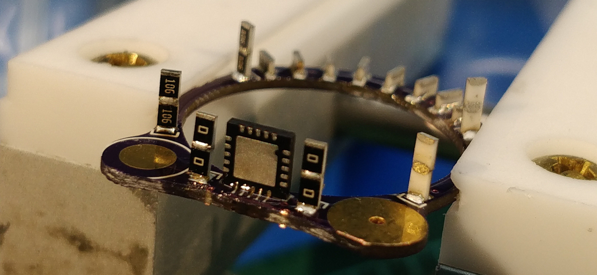

cyborg ring

An exploration into the world of cordwood construction, implemented as a wearable blinky ring powered by tiny zinc-air hearing aide batteries. Soon after releasing the source files a number of other hobbyists started building their own rings, and I was recently paid to supply ten ring kits as awards for a conference. On that note, get in touch if you won a kit and built it! Would be neat to see more cyborg rings in the wild.

Certified Open Hardware.
Source files and build instructions, more documentation, livestream build recording.
© copyright zach fredin, 2017-2019